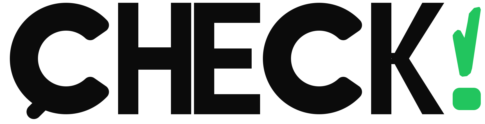

Belegt
Die wesentlichen Teile der Aussage werden durch direkte, passende und zeitlich geeignete Evidenz gestützt. Es gibt keinen ungelösten gleichwertigen Gegenbeleg.

Offline-Demo Desktop · DemoFAKTENCHECK FÜR POLITIK, MEDIEN & ALLTAG
Diese Demo zeigt das zuletzt vereinbarte CHECK!-Look-and-feel mit allen fünf Statuszuständen – inklusive Logo, Statussystem und quellenorientierter Ergebnisdarstellung.
Legende · Einordnungen
Die Farbe allein entscheidet nie. Jede Einordnung folgt einer festen Evidenzregel – und im Ergebnis wird zusätzlich erklärt, warum genau dieser Fall darunter fällt.
Die wesentlichen Teile der Aussage werden durch direkte, passende und zeitlich geeignete Evidenz gestützt. Es gibt keinen ungelösten gleichwertigen Gegenbeleg.
Belastbare Evidenz widerspricht dem Kern der Aussage im selben Kontext. Fehlende Belege allein reichen ausdrücklich nicht für „Falsch“.
Ein relevanter Tatsachenkern stimmt, aber Auswahl, Auslassung, Zeitraum oder Vergleichsrahmen erzeugen einen materiell verzerrten Gesamteindruck.
Kontext oder Evidenz reichen für kein belastbares eindeutiges Urteil, hochwertige Quellen widersprechen sich oder eine Zuschreibung bleibt offen.
Die Aussage hat keinen objektiv falsifizierbaren Tatsachenkern, etwa ein Geschmacks- oder Werturteil. Fehlende Daten führen dagegen zu „Unklar“.
So funktioniert CHECK!
CHECK! prüft die konkrete Kernaussage – nicht einen unscharfen Gesamttext.
Bei Zitaten wird zuerst geprüft, ob Person oder Organisation das wirklich gesagt hat.
Primärquellen, Datenstände, Definitionen und Bezugszeiträume werden abgeglichen.
Vor dem Urteil sucht CHECK! aktiv nach Evidenz gegen das vorläufige Ergebnis.
Qualitätsregel
Ein Status entsteht nicht aus Quellenanzahl oder Modell-Sicherheit. Entscheidend sind Belegpassung, Zeitbezug, Quellenrolle, Unabhängigkeit und Widerspruchsfreiheit.